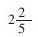
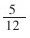
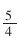
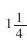
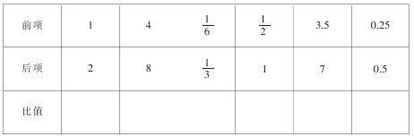

“比的认识”教学要点 [1]
编者按：“比的认识”涉及的概念较多，并且各个概念之间的关系比较复杂。本文针对上述问题作了系统全面的论述，对教师搞好这部分内容的教学会有所帮助。
“比的认识”是在学生学过分数与除法的关系、分数乘除法的意义和计算方法以及分数乘除法应用题的基础上进行教学的。教材这样编排，一方面加强了比和分数的联系，可以加深学生对分数意义的理解和对比的认识，提高学生灵活运用所学知识解决简单实际问题的能力。另一方面，又为后面教学圆周率、百分数、统计图表及比例等知识打下较好的基础。
根据“比的认识”的教学要求，教师在设计教学过程时，要特别注意抓好以下几个环节。
一、新课导入
比的概念是从对两个数量进行比较而产生的。因此，新课导入，要从学生已学过的知识和方法引入。如，（1）某班学生，男生人数是女生人数的几倍（或几分之几）？女生人数是男生人数的几分之几（或几倍）？（2）课桌长12分米、宽5分米，长是宽的几倍？宽是长的几分之几？（3）一辆汽车4小时行驶240千米，这辆汽车的速度是多少（平均每小时行多少千米）？
像上面3道题，要求一个量是另一个量的几倍（或几分之几），把一个量平均分成几份，求一份是多少等除法问题，都可以用比来表示。如，桌子
的长是宽

倍，我们也可以说成长与宽的比是12比5；宽是长的
，也可以说成宽与长的比是5比12等。那么，什么是比呢？教师在复习旧知与质疑中引入新课二、讲解新课
1.比的意义。要建立比的概念，首先，教师要有意识地利用除法的知识进行教学。因为对两个数量进行比较，可以是两个数量的相差关系，也可以是两个数量之间的相除关系。“比”通常是指两个数量相除的关系，如：男生人数÷女生人数、长÷宽、路程÷时间=速度等。只有通过比较两个数相除的运算关系时，才能说这是两个数的比，因而归纳出“两个数相除又叫做两个数的比”。其次，要使学生明确，比较两个数量之间的关系，有的是两个同类量的比，如长与宽的比，男生人数与女生人数的比等。有的是两个不同类量的比，如路程与时间的比等。但它们都通称两个数量的比，相比的两个量必须是相互关联的，如人的体重与课桌高度不关联，就不能比。最后还要强调，两个数的比，是一个有序的概念，如果颠倒了两个数的位置，就会得到另一个比，因此，务必要按语言叙述的顺序，弄清谁与谁比，如，甲数是4，乙数是7，那么甲数和乙数的比是4比7，相反，乙数和甲数的比则是7比4。
2.比的写法和各部分名称。学生理解了比的意义，明确了谁与谁比，在此基础上，教师再指导学生认识比的各部分名称（可举例讲解）。然后教师让学生练习比的读法、写法，学会求比值。这里要强调比值的概念，以后学习比例的意义、正比例的意义时要用到，必须使学生切实掌握。求比值的计算方法是学生熟悉的，主要是通过一些例子和练习让学生弄清“比值”是一个数，通常用分数表示，也可以用小数表示，有时也可能是整数。另外，比和比值有时容易混淆，如5:4表示5和4的比，而不是比值，如果写成分数形式

，根据需要既可以看作比，又可以看作是比值，而
或1.25只能是比值，不能是比。可见，比值是一个数，是比的前项除以后项所得的商，而比必须是表示所比较的两个数。教师要多通过实例进行分析、对比，帮助学生弄清楚比和比值之间的联系和区别。3.认识比和除法、分数的关系。根据比的意义，教师可用比较的方法，让学生讨论比和除法、分数之间的关系，最后归纳列表如下。
教学时，要注意比的前项、后项和比值，只是分别“相当于”除法中的被除数、除数和商，或分别“相当于”分数中的分子、分母和分数值，仅是相当于的关系，而不是相等的关系。这种描述是从三者之间的关系来说明的，它们的意义实质上是不一样的。“比”是指两个数相除，表示两个数的关系，除法是一种运算，而分数则是一个数。
比的后项为什么不能是零？要启发学生联系比和除法、分数的关系，从零不能做除数，也不能做分母，得出零也不能做比的后项。但要强调指出：球类比赛中的“1:0”或“10:0”等是一种计录得分多少的方法，只表示各得多少分，不表示两队所得分数的倍比关系，因此，与我们所讲的比的意义是截然不同的，决不能混为一谈。
三、课堂练习
根据教学要求，课堂练习应注重基本训练，并边讲边练。如，教学完比的意义后，教师可设计下面的题型让学生练习：
完成一项工程，甲独做4天完成，乙独做6天完成，甲乙两队工作时间的比是（），让学生说出两个数的比等；学习了比的各部分名称后，教师指着板书或课本上的比，让学生说出哪个数是比的前项，哪个数是比的后项，哪个数是比值，或进行类似练习“如果A：B=C，那么A是比的（），B是比的（），C是比的（）”的填空练习；学了比和除法、分数的关系后，可进行类似78:12=（）÷（）的练习。当学生已基本掌握了所学内容后教师可适当出几道变式或综合练习题，以满足不同类型学生学习的需要。如，20厘米：1米的比值是（）；500克：1千克的比值是（）；如果A除B的商是18，那么（）和（）的比是18:1。最后再安排这样一道题：已知比的前项与后项，求比值。

让学生想一想：为什么比的前项和后项都不同，而比值相同呢？这样设计就能激发学生的学习兴趣，为下节课学习比的基本性质作好准备。